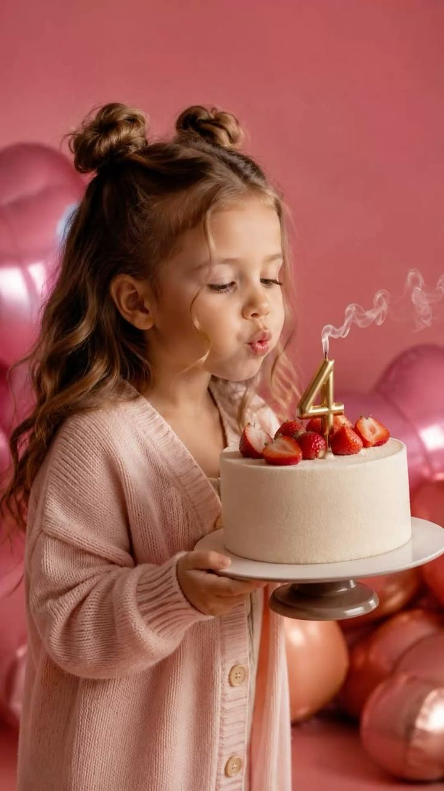

Especial Dia das Crianças
Ele só vai ter essa idade uma vez.
Transforme as fotos do celular em um ensaio fotográfico de estúdio do seu filho, sem sair de casa, sem agendar estúdio e sem precisar que ele fique parado.
Quero o ensaio do meu filho
Você envia as fotos pelo WhatsApp e recebe pronto para imprimir.
0dias
para o Dia das Crianças.
